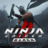
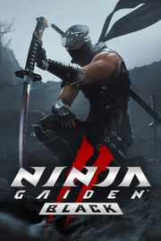

 NINJA GAIDEN 2 Black
Detalles
|  | |
| Tiempo de juego | No Jugado |
| Última actividad | Nunca |
| Añadido | 1/27/2025 15:31:49 |
| Modificado | 1/29/2025 14:26:27 |
| Estado de finalización | Not Played |
| Librería | Playnite |
| Fuente | 4TB TANK |
| Plataforma | PC (Windows) |
| Fecha de lanzamiento | |
| Puntuación de la Comunidad | 74 |
| Puntuación de la Crítica | |
| Puntuación de usuario | |
| Género | Acción Aventura |
| Desarrollador | KOEI TECMO GAMES CO., LTD. |
| Editor | KOEI TECMO GAMES CO., LTD. |
| Característica | Cloud Saves Compat. Total Con Mando Estadísticas HDR Disponible Logros De Préstamo Familiar Subtítulos Disponibles Tablas De Clasificación De Un Jugador |
| Enlaces | Punto de encuentro Discusiones Guías Noticias Página de la tienda PCGamingWiki Logros |
| Tag | Acción Acción y aventura Artes marciales Aventura Combate Difíciles Espadas Hack and slash Juegos de acción de personajes Luchador espectacular Ninjas Realistas Sangriento Tercera persona Un jugador Violentos |
Descripción

1. El mundo de “NINJA GAIDEN 2”, ¡remasterizado con gráficos alucinantes!
Los niveles, los personajes, los efectos y la iluminación han sido rediseñados y remasterizados para proporcionar la imagen más realista posible. Unreal Engine 5 permite crear espectaculares gráficos de generación actual, permitiendo a los jugadores adentrarse más en el mundo de la historia.2. ¡Acción veloz y brutal aprovechando lo último en gráficos!
Hemos remasterizado los elementos de gore como desmembramiento y sangre para amplificar la acción. Los jugadores podrán disfrutar de acción veloz y brutal con toda clase de técnicas y armas, incluyendo espadas japonesas, shurikens, kusari-gamas y tonfas.Nota: Puedes activar y desactivar la función de desmembramiento en el menú Opciones.